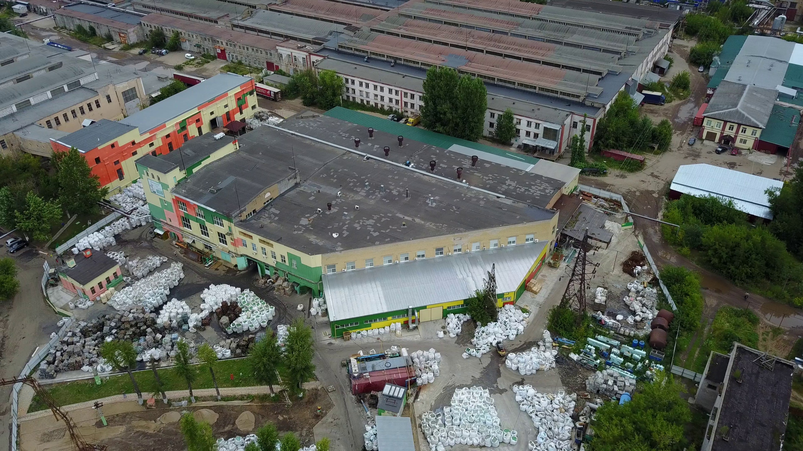

23 августа 2019 правительство Республики Татарстан и Coca Cola в России подписали соглашение о развитии культуры и практики раздельного сбора отходов. Одной из инициатив в рамках данного соглашения стала организация раздельного сбора отходов в Казани.
Так, в 2020 году Региональный оператор УК ПЖКХ совместно с Coca-Cola в России установили в жилых районах города 500 специальных контейнеров желтого цвета для раздельного сбора отходов. Они предназначены для накопления отходов пластиковой тары, стекла, металла и макулатуры.
Из сетчатых контейнеров все отходы попадают на сортировочную станцию МПС-1. За 2020 год было собрано более 200 тонн вторичных материальных ресурсов. После полезные фракции направляются на переработку, так, например, ПЭТ-бутылки отправились на переработку на Тверской Завод Вторичных Полимеров (ГК «EcoPartners»). Завод является одним из крупнейших предприятий России, занимающихся переработкой отходов пластиковой упаковки. Ежегодно на нашем заводе перерабатывается до 26 000 тонн вторичного сырья.

На заводе отходы пластиковой упаковки проходят несколько этапов переработки:
1. Сортировка: по цветам, отделение мусора и неперерабатываемых элементов, например термоусадочной этикетки.
2. Далее бутылки дробят и несколько раз промывают.
3. После этого массу разделяют на измельченные ПЭТ (бутылки), ПНД (крышечки) и полиэтиленовые этикетки. Данные виды пластиков отделяются друг от друга с помощью гидро- и аэрофлотации.
4. Из бутылок получаются ПЭТ-хлопья, которые используют в основном для производства волокна, которым потом, например, набивают подушки и используют в подложках для линолеума. Также хлопья перерабатывают в строительную ПЭТ-ленту (кстати, ее также делают на заводе в Твери).
Как вы можете видеть, переработка полезных отходов в России существует, мы рады делиться успехами в этом направлении и благодарим каждого, кто отнес использованную упаковку в желтый контейнер.
Разделяйте отходы с нами, и они обязательно получат вторую жизнь!